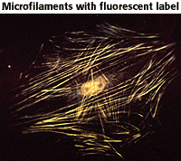
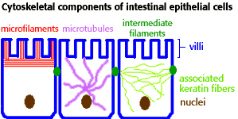

The Biology Project > Cell Biology > Cytoskeleton > Tutorial
Cytoskeleton Tutorial
Microtubules, microfilaments & intermediate filaments
The Cytoskeleton|  | The cytoskeleton is unique to eukaryotic cells. It is a dynamic three-dimensional structure that fills the cytoplasm. This structure acts as both muscle and skeleton, for movement and stability. The long fibers of the cytoskeleton are polymers of subunits. The primary types of fibers comprising the cytoskeleton are microfilaments, microtubules, and intermediate filaments. |
| Microfilaments are fine, thread-like protein fibers, 3-6 nm in diameter. They are composed predominantly of a contractile protein called actin, which is the most abundant cellular protein. Microfilaments' association with the protein myosin is responsible for muscle contraction. Microfilaments can also carry out cellular movements including gliding, contraction, and cytokinesis. |
| Microtubules are cylindrical tubes, 20-25 nm in diameter. They are composed of subunits of the protein tubulin--these subunits are termed alpha and beta. Microtubules act as a scaffold to determine cell shape, and provide a set of "tracks" for cell organelles and vesicles to move on. Microtubules also form the spindle fibers for separating chromosomes during mitosis. When arranged in geometric patterns inside flagella and cilia, they are used for locomotion. |
| Intermediate filaments are about 10 nm diameter and provide tensile strength for the cell. |
|
In the epithelial (skin) cells of the intestine, all three types of fibers are present. Microfilaments project into the villi, giving shape to the cell surface. Microtubules grow out of the centrosome to the cell periphery. Intermediate filaments connect adjacent cells through desmosomes.
 |
The Biology
Project
Department of Biochemistry and Molecular Biophysics
University of Arizona
September 1997
Revised: August 2004
Contact the Development Team
Department of Biochemistry and Molecular Biophysics
University of Arizona
September 1997
Revised: August 2004
Contact the Development Team
http://biology.arizona.edu
All contents copyright © 1997 - 2004. All rights reserved.